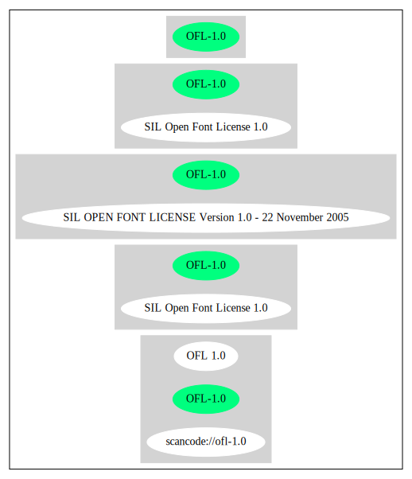

Key |
Value |
|---|---|
Fullname |
SIL Open Font License 1.0 |
Shortname |
OFL-1.0 |
Rating |
Unknown |
Classification |
NoCopyleft |
Other Names:
scancode://ofl-1.0
OFL 1.0
↑“The following restriction on distributions, which is part of OFL, has been widely accepted by open source projects when it is applied to fonts: 1) Neither the Font Software nor any of its individual components, in Original or Modified Versions, may be sold by itself.” (source: Debian Free Software Guidelines)
“Per SPDX.org, this license has been superseded. This license was released in November 2005. ” (source: Scancode)
Homepage: http://scripts.sil.org/cms/scripts/page.php?item_id=OFL10_web
SPDX: http://spdx.org/licenses/OFL-1.0.json
SIL OPEN FONT LICENSE
Version 1.0 - 22 November 2005
PREAMBLE
The goals of the Open Font License (OFL) are to stimulate worldwide
development of cooperative font projects, to support the font creation
efforts of academic and linguistic communities, and to provide an open
framework in which fonts may be shared and improved in partnership with
others.
The OFL allows the licensed fonts to be used, studied, modified and
redistributed freely as long as they are not sold by themselves. The
fonts, including any derivative works, can be bundled, embedded,
redistributed and sold with any software provided that the font
names of derivative works are changed. The fonts and derivatives,
however, cannot be released under any other type of license.
DEFINITIONS
"Font Software" refers to any and all of the following:
font files
data files
source code
build scripts
documentation
"Reserved Font Name" refers to the Font Software name as seen by
users and any other names as specified after the copyright statement.
"Standard Version" refers to the collection of Font Software
components as distributed by the Copyright Holder.
"Modified Version" refers to any derivative font software made by
adding to, deleting, or substituting — in part or in whole --
any of the components of the Standard Version, by changing formats
or by porting the Font Software to a new environment.
"Author" refers to any designer, engineer, programmer, technical
writer or other person who contributed to the Font Software.
PERMISSION & CONDITIONS
Permission is hereby granted, free of charge, to any person obtaining
a copy of the Font Software, to use, study, copy, merge, embed, modify,
redistribute, and sell modified and unmodified copies of the Font
Software, subject to the following conditions:
1) Neither the Font Software nor any of its individual components,
in Standard or Modified Versions, may be sold by itself.
2) Standard or Modified Versions of the Font Software may be bundled,
redistributed and sold with any software, provided that each copy
contains the above copyright notice and this license. These can be
included either as stand-alone text files, human-readable headers or
in the appropriate machine-readable metadata fields within text or
binary files as long as those fields can be easily viewed by the user.
3) No Modified Version of the Font Software may use the Reserved Font
Name(s), in part or in whole, unless explicit written permission is
granted by the Copyright Holder. This restriction applies to all
references stored in the Font Software, such as the font menu name and
other font description fields, which are used to differentiate the
font from others.
4) The name(s) of the Copyright Holder or the Author(s) of the Font
Software shall not be used to promote, endorse or advertise any
Modified Version, except to acknowledge the contribution(s) of the
Copyright Holder and the Author(s) or with their explicit written
permission.
5) The Font Software, modified or unmodified, in part or in whole,
must be distributed using this license, and may not be distributed
under any other license.
TERMINATION
This license becomes null and void if any of the above conditions are
not met.
DISCLAIMER
THE FONT SOFTWARE IS PROVIDED "AS IS", WITHOUT WARRANTY OF ANY KIND,
EXPRESS OR IMPLIED, INCLUDING BUT NOT LIMITED TO ANY WARRANTIES OF
MERCHANTABILITY, FITNESS FOR A PARTICULAR PURPOSE AND NONINFRINGEMENT
OF COPYRIGHT, PATENT, TRADEMARK, OR OTHER RIGHT. IN NO EVENT SHALL THE
COPYRIGHT HOLDER BE LIABLE FOR ANY CLAIM, DAMAGES OR OTHER LIABILITY,
INCLUDING ANY GENERAL, SPECIAL, INDIRECT, INCIDENTAL, OR CONSEQUENTIAL
DAMAGES, WHETHER IN AN ACTION OF CONTRACT, TORT OR OTHERWISE, ARISING
FROM, OUT OF THE USE OR INABILITY TO USE THE FONT SOFTWARE OR FROM
OTHER DEALINGS IN THE FONT SOFTWARE.SPDX
Scancode
Debian Free Software Guidelines
{
"__impliedNames": [
"OFL-1.0",
"SIL Open Font License 1.0",
"scancode://ofl-1.0",
"OFL 1.0"
],
"__impliedId": "OFL-1.0",
"__impliedAmbiguousNames": [
"The SIL Open Font License"
],
"__impliedComments": [
[
"Scancode",
[
"Per SPDX.org, this license has been superseded. This license was released\nin November 2005.\n"
]
]
],
"facts": {
"SPDX": {
"isSPDXLicenseDeprecated": false,
"spdxFullName": "SIL Open Font License 1.0",
"spdxDetailsURL": "http://spdx.org/licenses/OFL-1.0.json",
"_sourceURL": "https://spdx.org/licenses/OFL-1.0.html",
"spdxLicIsOSIApproved": false,
"spdxSeeAlso": [
"http://scripts.sil.org/cms/scripts/page.php?item_id=OFL10_web"
],
"_implications": {
"__impliedNames": [
"OFL-1.0",
"SIL Open Font License 1.0"
],
"__impliedId": "OFL-1.0",
"__isOsiApproved": false,
"__impliedURLs": [
[
"SPDX",
"http://spdx.org/licenses/OFL-1.0.json"
],
[
null,
"http://scripts.sil.org/cms/scripts/page.php?item_id=OFL10_web"
]
]
},
"spdxLicenseId": "OFL-1.0"
},
"Scancode": {
"otherUrls": null,
"homepageUrl": "http://scripts.sil.org/cms/scripts/page.php?item_id=OFL10_web",
"shortName": "OFL 1.0",
"textUrls": null,
"text": "SIL OPEN FONT LICENSE \n\nVersion 1.0 - 22 November 2005 \n\nPREAMBLE \nThe goals of the Open Font License (OFL) are to stimulate worldwide \ndevelopment of cooperative font projects, to support the font creation \nefforts of academic and linguistic communities, and to provide an open \nframework in which fonts may be shared and improved in partnership with \nothers. \n\nThe OFL allows the licensed fonts to be used, studied, modified and \nredistributed freely as long as they are not sold by themselves. The \nfonts, including any derivative works, can be bundled, embedded, \nredistributed and sold with any software provided that the font \nnames of derivative works are changed. The fonts and derivatives, \nhowever, cannot be released under any other type of license. \n\nDEFINITIONS \n\"Font Software\" refers to any and all of the following: \n\nfont files \ndata files \nsource code \nbuild scripts \ndocumentation \n\"Reserved Font Name\" refers to the Font Software name as seen by \nusers and any other names as specified after the copyright statement. \n\n\"Standard Version\" refers to the collection of Font Software \ncomponents as distributed by the Copyright Holder. \n\n\"Modified Version\" refers to any derivative font software made by \nadding to, deleting, or substituting â in part or in whole -- \nany of the components of the Standard Version, by changing formats \nor by porting the Font Software to a new environment. \n\n\"Author\" refers to any designer, engineer, programmer, technical \nwriter or other person who contributed to the Font Software. \n\nPERMISSION & CONDITIONS \nPermission is hereby granted, free of charge, to any person obtaining \na copy of the Font Software, to use, study, copy, merge, embed, modify, \nredistribute, and sell modified and unmodified copies of the Font \nSoftware, subject to the following conditions: \n\n1) Neither the Font Software nor any of its individual components, \nin Standard or Modified Versions, may be sold by itself. \n\n2) Standard or Modified Versions of the Font Software may be bundled, \nredistributed and sold with any software, provided that each copy \ncontains the above copyright notice and this license. These can be \nincluded either as stand-alone text files, human-readable headers or \nin the appropriate machine-readable metadata fields within text or \nbinary files as long as those fields can be easily viewed by the user. \n\n3) No Modified Version of the Font Software may use the Reserved Font \nName(s), in part or in whole, unless explicit written permission is \ngranted by the Copyright Holder. This restriction applies to all \nreferences stored in the Font Software, such as the font menu name and \nother font description fields, which are used to differentiate the \nfont from others. \n\n4) The name(s) of the Copyright Holder or the Author(s) of the Font \nSoftware shall not be used to promote, endorse or advertise any \nModified Version, except to acknowledge the contribution(s) of the \nCopyright Holder and the Author(s) or with their explicit written \npermission. \n\n5) The Font Software, modified or unmodified, in part or in whole, \nmust be distributed using this license, and may not be distributed \nunder any other license. \n\nTERMINATION \nThis license becomes null and void if any of the above conditions are \nnot met. \n\nDISCLAIMER \nTHE FONT SOFTWARE IS PROVIDED \"AS IS\", WITHOUT WARRANTY OF ANY KIND, \nEXPRESS OR IMPLIED, INCLUDING BUT NOT LIMITED TO ANY WARRANTIES OF \nMERCHANTABILITY, FITNESS FOR A PARTICULAR PURPOSE AND NONINFRINGEMENT \nOF COPYRIGHT, PATENT, TRADEMARK, OR OTHER RIGHT. IN NO EVENT SHALL THE \nCOPYRIGHT HOLDER BE LIABLE FOR ANY CLAIM, DAMAGES OR OTHER LIABILITY, \nINCLUDING ANY GENERAL, SPECIAL, INDIRECT, INCIDENTAL, OR CONSEQUENTIAL \nDAMAGES, WHETHER IN AN ACTION OF CONTRACT, TORT OR OTHERWISE, ARISING \nFROM, OUT OF THE USE OR INABILITY TO USE THE FONT SOFTWARE OR FROM \nOTHER DEALINGS IN THE FONT SOFTWARE.",
"category": "Permissive",
"osiUrl": null,
"owner": "SIL International",
"_sourceURL": "https://github.com/nexB/scancode-toolkit/blob/develop/src/licensedcode/data/licenses/ofl-1.0.yml",
"key": "ofl-1.0",
"name": "SIL Open Font License 1.0",
"spdxId": "OFL-1.0",
"notes": "Per SPDX.org, this license has been superseded. This license was released\nin November 2005.\n",
"_implications": {
"__impliedNames": [
"scancode://ofl-1.0",
"OFL 1.0",
"OFL-1.0"
],
"__impliedId": "OFL-1.0",
"__impliedComments": [
[
"Scancode",
[
"Per SPDX.org, this license has been superseded. This license was released\nin November 2005.\n"
]
]
],
"__impliedCopyleft": [
[
"Scancode",
"NoCopyleft"
]
],
"__calculatedCopyleft": "NoCopyleft",
"__impliedText": "SIL OPEN FONT LICENSE \n\nVersion 1.0 - 22 November 2005 \n\nPREAMBLE \nThe goals of the Open Font License (OFL) are to stimulate worldwide \ndevelopment of cooperative font projects, to support the font creation \nefforts of academic and linguistic communities, and to provide an open \nframework in which fonts may be shared and improved in partnership with \nothers. \n\nThe OFL allows the licensed fonts to be used, studied, modified and \nredistributed freely as long as they are not sold by themselves. The \nfonts, including any derivative works, can be bundled, embedded, \nredistributed and sold with any software provided that the font \nnames of derivative works are changed. The fonts and derivatives, \nhowever, cannot be released under any other type of license. \n\nDEFINITIONS \n\"Font Software\" refers to any and all of the following: \n\nfont files \ndata files \nsource code \nbuild scripts \ndocumentation \n\"Reserved Font Name\" refers to the Font Software name as seen by \nusers and any other names as specified after the copyright statement. \n\n\"Standard Version\" refers to the collection of Font Software \ncomponents as distributed by the Copyright Holder. \n\n\"Modified Version\" refers to any derivative font software made by \nadding to, deleting, or substituting â in part or in whole -- \nany of the components of the Standard Version, by changing formats \nor by porting the Font Software to a new environment. \n\n\"Author\" refers to any designer, engineer, programmer, technical \nwriter or other person who contributed to the Font Software. \n\nPERMISSION & CONDITIONS \nPermission is hereby granted, free of charge, to any person obtaining \na copy of the Font Software, to use, study, copy, merge, embed, modify, \nredistribute, and sell modified and unmodified copies of the Font \nSoftware, subject to the following conditions: \n\n1) Neither the Font Software nor any of its individual components, \nin Standard or Modified Versions, may be sold by itself. \n\n2) Standard or Modified Versions of the Font Software may be bundled, \nredistributed and sold with any software, provided that each copy \ncontains the above copyright notice and this license. These can be \nincluded either as stand-alone text files, human-readable headers or \nin the appropriate machine-readable metadata fields within text or \nbinary files as long as those fields can be easily viewed by the user. \n\n3) No Modified Version of the Font Software may use the Reserved Font \nName(s), in part or in whole, unless explicit written permission is \ngranted by the Copyright Holder. This restriction applies to all \nreferences stored in the Font Software, such as the font menu name and \nother font description fields, which are used to differentiate the \nfont from others. \n\n4) The name(s) of the Copyright Holder or the Author(s) of the Font \nSoftware shall not be used to promote, endorse or advertise any \nModified Version, except to acknowledge the contribution(s) of the \nCopyright Holder and the Author(s) or with their explicit written \npermission. \n\n5) The Font Software, modified or unmodified, in part or in whole, \nmust be distributed using this license, and may not be distributed \nunder any other license. \n\nTERMINATION \nThis license becomes null and void if any of the above conditions are \nnot met. \n\nDISCLAIMER \nTHE FONT SOFTWARE IS PROVIDED \"AS IS\", WITHOUT WARRANTY OF ANY KIND, \nEXPRESS OR IMPLIED, INCLUDING BUT NOT LIMITED TO ANY WARRANTIES OF \nMERCHANTABILITY, FITNESS FOR A PARTICULAR PURPOSE AND NONINFRINGEMENT \nOF COPYRIGHT, PATENT, TRADEMARK, OR OTHER RIGHT. IN NO EVENT SHALL THE \nCOPYRIGHT HOLDER BE LIABLE FOR ANY CLAIM, DAMAGES OR OTHER LIABILITY, \nINCLUDING ANY GENERAL, SPECIAL, INDIRECT, INCIDENTAL, OR CONSEQUENTIAL \nDAMAGES, WHETHER IN AN ACTION OF CONTRACT, TORT OR OTHERWISE, ARISING \nFROM, OUT OF THE USE OR INABILITY TO USE THE FONT SOFTWARE OR FROM \nOTHER DEALINGS IN THE FONT SOFTWARE.",
"__impliedURLs": [
[
"Homepage",
"http://scripts.sil.org/cms/scripts/page.php?item_id=OFL10_web"
]
]
}
},
"Debian Free Software Guidelines": {
"LicenseName": "The SIL Open Font License",
"State": "DFSGCompatible",
"_sourceURL": "https://wiki.debian.org/DFSGLicenses",
"_implications": {
"__impliedNames": [
"OFL-1.0"
],
"__impliedAmbiguousNames": [
"The SIL Open Font License"
],
"__impliedJudgement": [
[
"Debian Free Software Guidelines",
{
"tag": "PositiveJudgement",
"contents": "The following restriction on distributions, which is part of OFL, has been widely accepted by open source projects when it is applied to fonts: 1) Neither the Font Software nor any of its individual components, in Original or Modified Versions, may be sold by itself."
}
]
]
},
"Comment": "The following restriction on distributions, which is part of OFL, has been widely accepted by open source projects when it is applied to fonts: 1) Neither the Font Software nor any of its individual components, in Original or Modified Versions, may be sold by itself.",
"LicenseId": "OFL-1.0"
}
},
"__impliedJudgement": [
[
"Debian Free Software Guidelines",
{
"tag": "PositiveJudgement",
"contents": "The following restriction on distributions, which is part of OFL, has been widely accepted by open source projects when it is applied to fonts: 1) Neither the Font Software nor any of its individual components, in Original or Modified Versions, may be sold by itself."
}
]
],
"__impliedCopyleft": [
[
"Scancode",
"NoCopyleft"
]
],
"__calculatedCopyleft": "NoCopyleft",
"__isOsiApproved": false,
"__impliedText": "SIL OPEN FONT LICENSE \n\nVersion 1.0 - 22 November 2005 \n\nPREAMBLE \nThe goals of the Open Font License (OFL) are to stimulate worldwide \ndevelopment of cooperative font projects, to support the font creation \nefforts of academic and linguistic communities, and to provide an open \nframework in which fonts may be shared and improved in partnership with \nothers. \n\nThe OFL allows the licensed fonts to be used, studied, modified and \nredistributed freely as long as they are not sold by themselves. The \nfonts, including any derivative works, can be bundled, embedded, \nredistributed and sold with any software provided that the font \nnames of derivative works are changed. The fonts and derivatives, \nhowever, cannot be released under any other type of license. \n\nDEFINITIONS \n\"Font Software\" refers to any and all of the following: \n\nfont files \ndata files \nsource code \nbuild scripts \ndocumentation \n\"Reserved Font Name\" refers to the Font Software name as seen by \nusers and any other names as specified after the copyright statement. \n\n\"Standard Version\" refers to the collection of Font Software \ncomponents as distributed by the Copyright Holder. \n\n\"Modified Version\" refers to any derivative font software made by \nadding to, deleting, or substituting â in part or in whole -- \nany of the components of the Standard Version, by changing formats \nor by porting the Font Software to a new environment. \n\n\"Author\" refers to any designer, engineer, programmer, technical \nwriter or other person who contributed to the Font Software. \n\nPERMISSION & CONDITIONS \nPermission is hereby granted, free of charge, to any person obtaining \na copy of the Font Software, to use, study, copy, merge, embed, modify, \nredistribute, and sell modified and unmodified copies of the Font \nSoftware, subject to the following conditions: \n\n1) Neither the Font Software nor any of its individual components, \nin Standard or Modified Versions, may be sold by itself. \n\n2) Standard or Modified Versions of the Font Software may be bundled, \nredistributed and sold with any software, provided that each copy \ncontains the above copyright notice and this license. These can be \nincluded either as stand-alone text files, human-readable headers or \nin the appropriate machine-readable metadata fields within text or \nbinary files as long as those fields can be easily viewed by the user. \n\n3) No Modified Version of the Font Software may use the Reserved Font \nName(s), in part or in whole, unless explicit written permission is \ngranted by the Copyright Holder. This restriction applies to all \nreferences stored in the Font Software, such as the font menu name and \nother font description fields, which are used to differentiate the \nfont from others. \n\n4) The name(s) of the Copyright Holder or the Author(s) of the Font \nSoftware shall not be used to promote, endorse or advertise any \nModified Version, except to acknowledge the contribution(s) of the \nCopyright Holder and the Author(s) or with their explicit written \npermission. \n\n5) The Font Software, modified or unmodified, in part or in whole, \nmust be distributed using this license, and may not be distributed \nunder any other license. \n\nTERMINATION \nThis license becomes null and void if any of the above conditions are \nnot met. \n\nDISCLAIMER \nTHE FONT SOFTWARE IS PROVIDED \"AS IS\", WITHOUT WARRANTY OF ANY KIND, \nEXPRESS OR IMPLIED, INCLUDING BUT NOT LIMITED TO ANY WARRANTIES OF \nMERCHANTABILITY, FITNESS FOR A PARTICULAR PURPOSE AND NONINFRINGEMENT \nOF COPYRIGHT, PATENT, TRADEMARK, OR OTHER RIGHT. IN NO EVENT SHALL THE \nCOPYRIGHT HOLDER BE LIABLE FOR ANY CLAIM, DAMAGES OR OTHER LIABILITY, \nINCLUDING ANY GENERAL, SPECIAL, INDIRECT, INCIDENTAL, OR CONSEQUENTIAL \nDAMAGES, WHETHER IN AN ACTION OF CONTRACT, TORT OR OTHERWISE, ARISING \nFROM, OUT OF THE USE OR INABILITY TO USE THE FONT SOFTWARE OR FROM \nOTHER DEALINGS IN THE FONT SOFTWARE.",
"__impliedURLs": [
[
"SPDX",
"http://spdx.org/licenses/OFL-1.0.json"
],
[
null,
"http://scripts.sil.org/cms/scripts/page.php?item_id=OFL10_web"
],
[
"Homepage",
"http://scripts.sil.org/cms/scripts/page.php?item_id=OFL10_web"
]
]
}